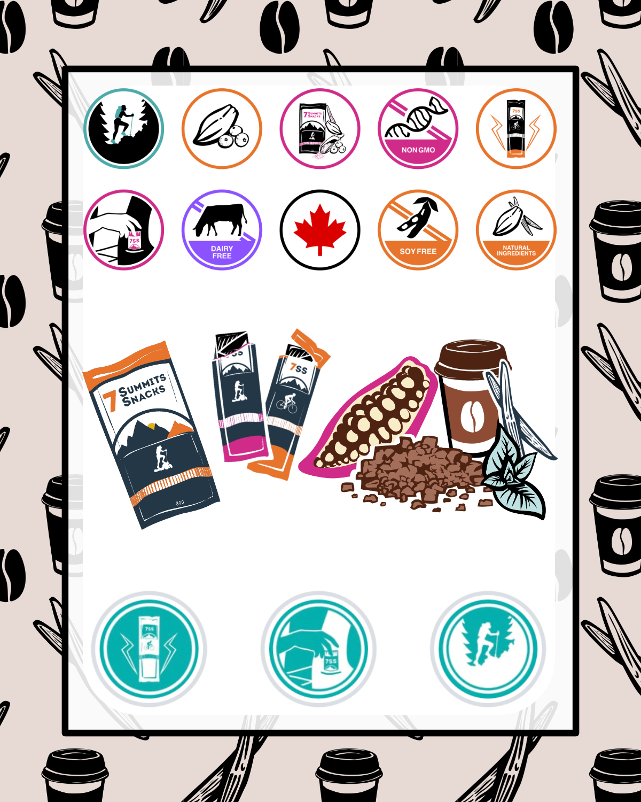
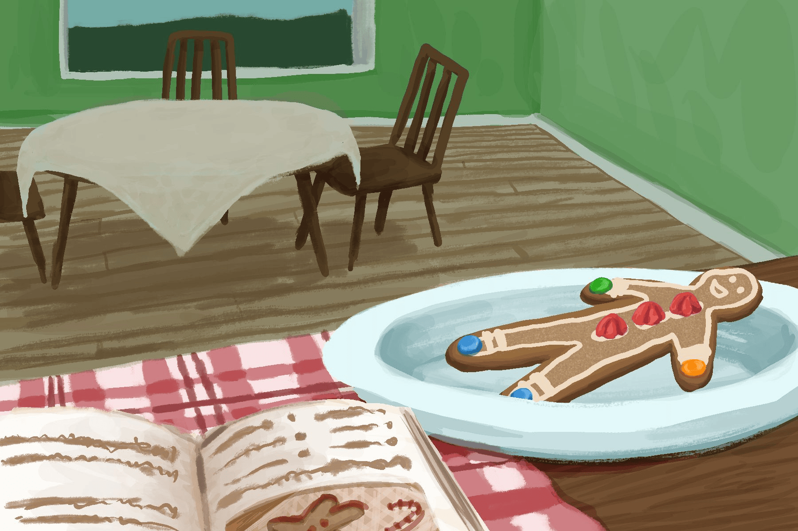

About Me
My name is Twyla. As a designer, I love making projects with fun, interactive elements to them. I also love the story-telling aspects of design. When I'm not designing, I can often be found behind a big stack of books, or wasting time on the internet!
Icecream Infographic
Icecream Infographic
A complicated, multi-step process is simplified here, into an easy and fun to follow set of instructions. In print form, this infographic invites users to interact physically with the instructions: the layered sections create more space for the instructions, as well as providing a form that invites users to actively engage with the information being supplied.
(Hover to see this infographic in action.)
(Tap and hold to see this infographic in action.)
Guardians of the Library
(Title Sequence)
Guardians of the Library
(Title Sequence)
This is a title sequence created for a fictional television show, based on this article. The animated sequence mirrors some of the events described in the article, piquing the interest of the viewer without giving away the entire story. Viewers of the show will enjoy rewatching the title sequence as the events depicted show up in the series.
This animated sequence was created with Krita and Adobe After Effects.
7 Summits Snacks Branding

7 Summit Snacks Branding
Over my summer internship with Seven Summits Snacks, I created a number of assets to represent valued elements and improve consistency across the brand. Among the assets I created were a number of icons, ingredient illustrations, tileable backgrounds, and a couple of infographics.
The icons and illustrations created have versatile applications, and can even be deconstructed for more widespread usefulness. The icons have both colour and black and white versions.
Illustration
Illustration
This is a variety collection of illustrations to showcase my skill in a number of mediums, including pen and ink, pencil and colour pencil, guauche, and digital art.
(Click through to see all nine illustrations.)
Cassie Brand Design/Logo
Cassie Brand Design - Logo
This is a personal brand, designed for my sister, Cassie. The PDF shows my process work in creating this brand design, as well as the creative decisions behind it.
The end result is a fun logo design, complete with guidelines, which connects strongly to my sister's personality and values.
This branding has potential to become even bigger, with matching icons, illustrations, patterns, etc. The logo is suitable for both personal use, or even in a more professional setting (such as if my sister decided to start a bakery business, for example).
Mini Animations


Mini Animations
As a yearly holiday tradition, I used to send a care package to a friend. When shipping costs started to stretch my budget, I decided to change our holiday tradition up a little. I sent my friend a recipe for the gingerbread cookies she loved so much, and created these animations for her to enjoy, and remind her of our favourite traditions even when I couldn't send her the real thing!
My friend also has an interest in both trains and animals, and requested I create her a piece of artwork featuring both – thus the second animation was born, a very short animation of a cat riding a train.
The Broom's Tick - Graphic Novella (Excerpt)
The Broom's Tick - Graphic Novella (Excerpt)
The Broom's Tick is a short graphic narrative about a mimic lurking deep within a complex cave system. The mimic is a curious creature, motivated by the thought of finding new and different objects to turn into. An adventuring party traveling through the caves has just such an object, enticing the mimic to follow after the group.
This narrative uses colour elements and light/dark contrasts to emphasize elements, make the dark cave atmosphere feel more real, and show emotional reactions. Visual flow and pacing are controlled via panel sizing, layout, and contrasting element to draw and direct attention.
The development of character designs take into consideration what each character's role in the party is, and what is most practical to wear within that role, combined with aspects of the characters' personalities.
(Click to cycle through the four pages of this excerpt.)
DXD Website Development
(webpage may not be displaying properly)
DXD Website Development
This website was created as a university DXD project, as an alternate website design for the Edmonton Streetcars website. This design features many images, an update to the original website's many text-heavy pages. The site has a very strong visual style, which is consistant across all pages. It has also been designed and implemented with a mobile breakpoint, to ensure the design can be used on mobile as well as desktop.
See the website as it should be viewed, at TAD Streetcars.